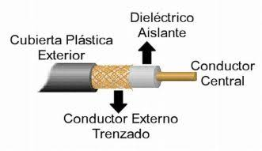
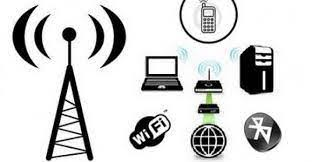

1. Medios Guiados (Físicos) - TP 11 y 12
Son aquellos que conducen las señales a través de un medio sólido y delimitado. Su capacidad de transmisión depende del material conductor, el grosor y la distancia del enlace.
Par Trenzado (UTP / STP)
Formado por pares de hilos de cobre aislados y entrelazados helicoidalmente para cancelar la interferencia electromagnética externa y la diafonía (crosstalk).
Uso: Cableado estructurado en redes LAN (Cat 5e, Cat 6, Cat 6A) hasta 100 metros.
Cable Coaxial
Consta de un núcleo rígido de cobre central, un aislante dieléctrico, una malla metálica de blindaje contra ruidos y una cubierta aislante exterior.
Uso: Televisión por cable (CATV), acometidas de Internet y enlaces de radiofrecuencia.
Fibra Óptica
Filamentos ultrafinos de vidrio o silicio (núcleo y revestimiento) que transmiten pulsos de luz mediante reflexión interna total.
Ventajas: Ancho de banda masivo (Gbps/Tbps), baja atenuación e inmunidad total al ruido eléctrico.

Estructura física de los principales medios de transmisión guiados
2. Medios No Guiados (Inalámbricos) - TP 16
Transportan ondas electromagnéticas sin utilizar un conductor físico; la señal se irradia a través del aire o el vacío mediante antenas o emisores ópticos.
Láser (FSO - Free Space Optics)
Utiliza haces de luz infrarroja o láser altamente direccionales en línea de vista directa entre dos edificios o puntos fijos. Alcanza velocidades similares a la fibra óptica sin tender cables, pero es sensible a la niebla densa, humo o turbulencias atmosféricas.
Radiocomunicaciones
Transmisión omnidireccional o direccional mediante ondas de radiofrecuencia (RF). Incluye tecnologías como Wi-Fi, Bluetooth, telefonía celular (4G/5G), radio AM/FM y enlaces punto a punto.

Propagación de señales en medios no guiados
3. Redes de Telecomunicaciones - TP 17
Conjunto de nodos (computadoras, switches, routers, servidores) interconectados entre sí para compartir recursos, servicios e información mediante protocolos estándar (como TCP/IP).
- PAN (Personal Area Network): Alcance de pocos metros alrededor de una persona (ej. Bluetooth, auriculares inalámbricos).
- LAN (Local Area Network): Cobertura local dentro de un edificio, laboratorio escolar u oficina, con alta velocidad y baja latencia.
- MAN (Metropolitan Area Network): Interconecta varias LAN dentro de una misma ciudad o campus universitario mediante anillos de fibra óptica.
- WAN (Wide Area Network): Redes de área amplia que abarcan países o continentes enteros, siendo Internet la red WAN global por excelencia.
Clasificación de redes según su alcance geográfico